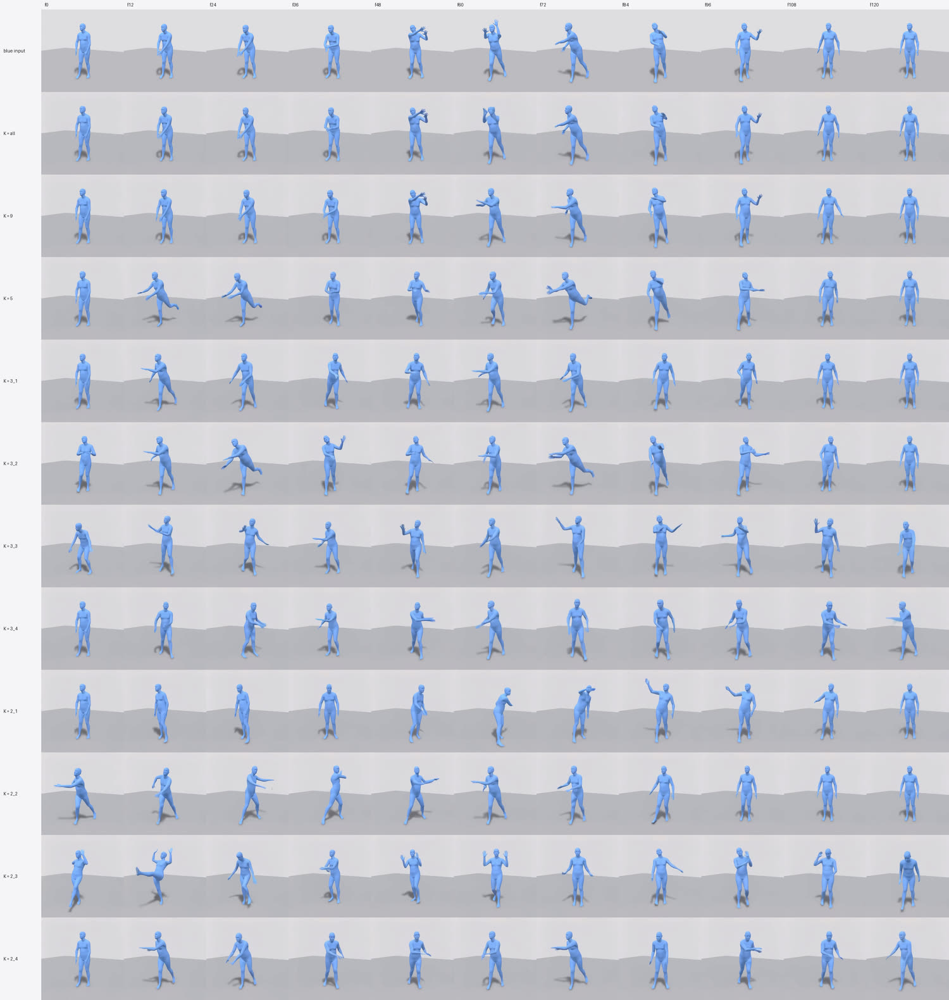
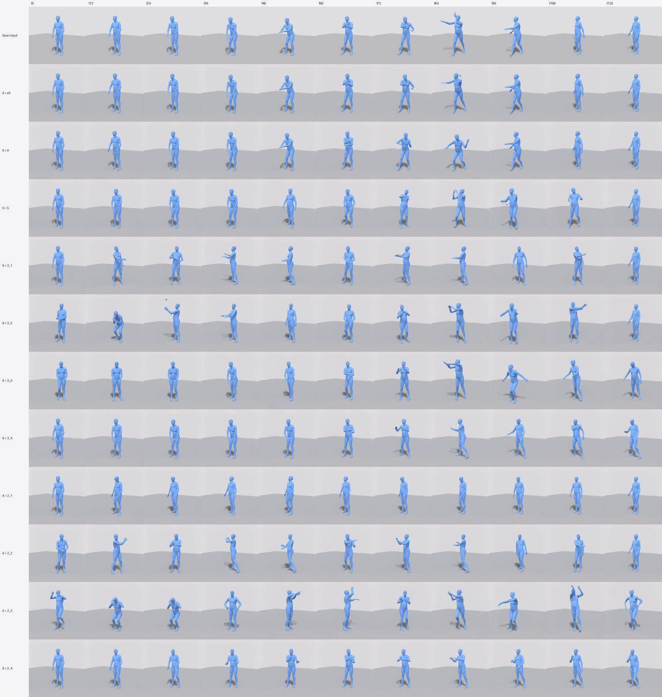

Exp 2 · Strong vs. loose control — how much motion does the video model add?
Result 6 — baseball
"A person hit a ball with baseball bat." A stride and a rotation get added that read a little like batting — but no bat and no ball ever appear, at any K. The marginal case of the six.
What went in#
Input energy 0.089 (s1234) and 0.120 (s5678) — second-highest of the six, and the one prompt where the two seeds differ substantially from each other.
The beat this prompt was chosen for is load onto the back foot, pause, then the fast rotation through contact. It is a timing signature that is very specific and hard to fake.
Strong control#
Blue inputMotionGPT3 → SMPL, every frame
K = all16 frames — every 8th
K = 99 frames — every 16th
a person hit a ball with baseball bat
baseball
marginalthe beat load onto the back foot, pause, then rotation through contact
s1234
s5678
s1234
s5678
s1234
s5678
K = all (0.88) and K = 9 (0.75).The useful window#
Blue inputMotionGPT3 → SMPL, every frame
K = 50 · 32 · 64 · 88 · 120
K = 3_264 · 88 · 120 — head free
a person hit a ball with baseball bat
baseball
marginalthe beat load onto the back foot, pause, then rotation through contact
s1234
s5678
s1234
s5678
s1234
s5678
K = 5 (1.38) and K = 3_2 (1.44).Placement at K = 3#
K = 3_10 · 64 · 120 — both ends pinned
K = 3_264 · 88 · 120 — head free
K = 3_332 · 64 · 88 — both ends free
K = 3_40 · 32 · 64 — tail free
a person hit a ball with baseball bat
baseball
marginalthe beat load onto the back foot, pause, then rotation through contact
s1234
s5678
s1234
s5678
s1234
s5678
s1234
s5678
3_1 0.93 · 3_2 1.44 · 3_3 1.64 · 3_4 1.16.Placement at K = 2#
K = 2_10 · 120 — both ends pinned
K = 2_264 · 120 — head free
K = 2_332 · 88 — both ends free
K = 2_40 · 64 — tail free
a person hit a ball with baseball bat
baseball
marginalthe beat load onto the back foot, pause, then rotation through contact
s1234
s5678
s1234
s5678
s1234
s5678
s1234
s5678
2_1 0.66 · 2_2 0.90 · 2_3 1.55 · 2_4 0.83. Three of four sit at or below the
input.The numbers for this prompt#
| seed | set | energy | vs. input |
|---|---|---|---|
| 1234 | 3_3 | 0.1837 | 2.059 |
| 1234 | 3_4 | 0.1714 | 1.921 |
| 1234 | 5 | 0.1536 | 1.722 |
| 1234 | 2_3 | 0.1438 | 1.612 |
| 1234 | 3_2 | 0.1342 | 1.504 |
| 5678 | 2_3 | 0.1776 | 1.485 |
| 1234 | 2_4 | 0.126 | 1.412 |
| 5678 | 3_2 | 0.1633 | 1.366 |
| 5678 | 3_3 | 0.1465 | 1.225 |
| 1234 | 3_1 | 0.0973 | 1.09 |
| 1234 | 2_2 | 0.0959 | 1.075 |
| 5678 | 5 | 0.1231 | 1.03 |
| 1234 | 2_1 | 0.0887 | 0.994 |
| 5678 | all | 0.107 | 0.895 |
| 1234 | all | 0.0772 | 0.865 |
| 1234 | 9 | 0.0682 | 0.765 |
| 5678 | 3_1 | 0.0909 | 0.76 |
| 5678 | 9 | 0.0884 | 0.739 |
| 5678 | 2_2 | 0.0864 | 0.722 |
| 5678 | 3_4 | 0.0465 | 0.389 |
| 5678 | 2_1 | 0.0394 | 0.329 |
| 5678 | 2_4 | 0.0286 | 0.239 |
Timing strip#
Timing stripevery condition, time-aligned
a person hit a ball with baseball bat
baseball
marginalthe beat load onto the back foot, pause, then rotation through contact

s1234
s5678